Glaze thickness
Many ceramic glaze benefits and issues are closely related to the thickness with which the glaze is applied. Many glazes are very sensitive to thickness, so control is needed.
Key phrases linking here: glaze thickness - Learn more
Details

Simple example of color-variation-by-thickness in a honey glaze
This is GA6-B, a transparent amber glaze at cone 6. The color darkens in the recesses as a simple function of thickness.
Potters soon learn the need to concern themselves with the thickness of glazes they apply to ware, each one having its own requirement. This involves the selection of bisque temperature (to control bisque porosity and thus the speed of thickness buildup); duration of dipping or number of brush coats applied; the viscosity, thixotropy and specific gravity of the slurry; the percentage of plastic clays in the slurry, the temperature and wetness of the bisque. On some types of ware (e.g. transparently glazed fine porcelain) the glaze must be thin and evenly applied. On others (e.g. majolica) it must be extremely thick to produce an opaque even white. By contrast, the shade of transparent colored glazes varies with thickness - potters exploit this by incorporating surface contours and textures on the ware to purposely encourage thickness variation.
A number of glaze defects are directly related to glaze thickness. -Glazes can pinhole or exhibit a rough texture if applied too thinly on bodies having coarser particles (which generate gases of decomposition during firing). -Fluid melt glazes, or those having high surface tension at melt stage, can blister on firing if applied too thick. Or, run off ware. -Glazes having sufficient clay to produce excessive shrinkage on drying will crack (and crawl during firing) if applied too thick. -Glazes having a thermal expansion lower than the body, and thickly applied on the inside of vessels, can fracture the piece during kiln cooling (those having a higher expansion than the body be more likely to craze. -Thickly applied transparent colored glazes will fire the wrong shade. -Transparent glazes applied too thickly will often cloud, obscuring underglaze decoration. -Heavily opacified zircon glazes have reduced melt mobility and if applied too thickly will crawl on abrupt concave contours. -Low-temperature glazes have a less developed bond with the body and can shiver around sharp contours if applied too thickly.
Certain visual effects depend heavily on thickness of glaze application. Reactive glazes that variegate or crystallize usually require a specific thickness (and a specific firing curve). Crystalline glazes must be applied too thick so they will run during firing. Many types of ware (e.g. functional porcelain and stoneware) require that the glaze be applied as evenly as possible. Majolica glazes, as noted above, must be applied thick. Bodies containing coarse particles require thicker glaze coverage to produce a smooth surface.
In pottery and hobby it is thus mostly experience that will help you determine the right thickness for a glaze. Even application and getting the right thickness are quite tricky with brushing glazes. The method and number of coats needed depend on the specific gravity, viscosity and drying speed of the slurry. Thickness-measuring devices are common for use with dipping glazes (however a trained eye can tell when thickness is off (credit-card-thickness is about right for most common glaze types). If the specific gravity and thixotropy of glaze slurries are maintained, the same type of clay is used, the bisque firing is always done at the same temperature and the type of ware is consistent, workers tend to gauge thickness simply by the dipping time.
In industry, glaze thickness is just a production parameter that must be adhered to, machines are calibrated and glaze slurries are tuned to specific specifications. People working at a factory may thus never see a piece whose glaze thickness is not right.
Related Information
How thick should a glaze be on stoneware?
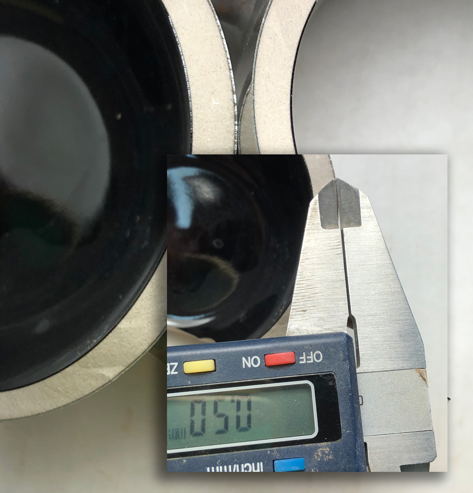
This picture has its own page with more detail, click here to see it.
Potters can learn this from a commercial manufacturer. This stoneware mug was bought at Ikea. The body is a highly vitreous bone-colored stoneware, likely fired to around 2200F (1200C). The inner glaze is a dark amber transparent (similar to GA6-B) and the outer is a floating blue (similar to GA6-C or G2917). The fired glaze thickness is about 0.5 mm inside and out. Keeping the thickness to a minimum on the inside avoids glaze compression issues.
Transparent glaze thickness really matters over this Amaco velvet underglaze
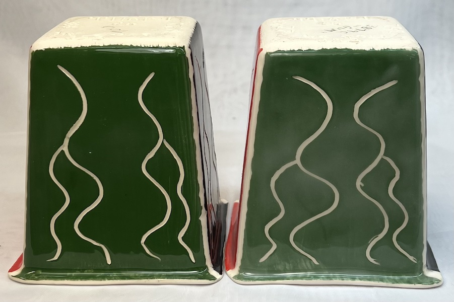
This picture has its own page with more detail, click here to see it.
At the leather hard stage the sides of these two L4410P low temperature dolomite body pieces were coated with AMACO velvet underglazes. Both were bisque fired and finished with a layer with the same transparent glaze. But the difference is the thickness of that glaze and the method of application: The one on the left got three thin layers of a brushing glaze. The one on the right was quickly dipped in a base coat version of that same glaze. Evidently there is a thickness threshold, which, when exceeded results in clouding. We have observed that this happens with pretty well any clear glaze.
For even coverage white majolica glazes must be applied by dipping
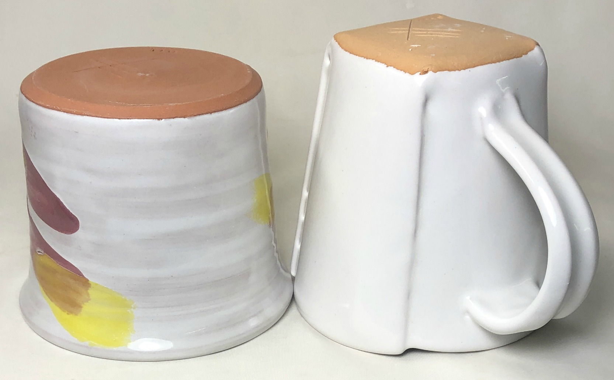
This picture has its own page with more detail, click here to see it.
The mug on the left has three coats of Spectrum Majolica base, painted on by brush. Drying was required after doing the inside coats, so the total glazing time was several hours. The glaze layer is way too thin and it is not even at all! The one on the right was dipped in a 5 gallon bucket-full of G3890 Arbuckle white (that was weighed out according to a recipe and slurried at 1.62 specific gravity). It took seconds to dip-apply, the thickness coverage is good. As is obvious, it makes sense to make your own base white. Then decorate using the overglaze colors (e.g. the Spectrum Majolica series). Another advantage of making your own white is that you can splurge on the amount of opacifier (in this case 9% zircon and 4% tin oxide), to achieve maximum whiteness and opacity. And, you can proportion a mix of two frits (having higher and lower thermal expansion) to fine-tune the fit with the body (a big issue at low fire).
A breaking glaze highlights incised decoration by its variation in thickness
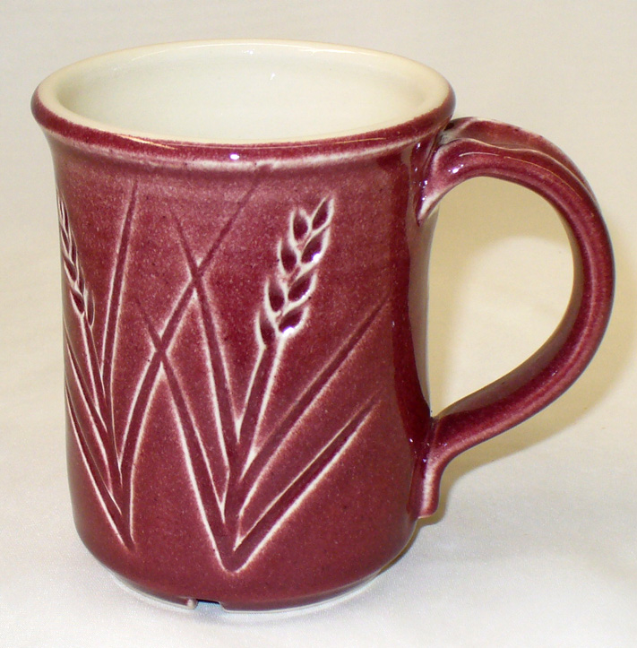
This picture has its own page with more detail, click here to see it.
This is the Ravenscrag slip cone 6 base (GR6-A which is 80 Ravenscrag, 20 Frit 3134) with 10% Mason 6006 stain (our code GR6-L). Notice how the color is white where it thins on contours, this is called "breaking". Thus we say that this glaze "breaks to white". The development of this color needs the right chemistry in the host glaze and it needs depth to work (on the edges the glaze is too thin so there is no color). The breaking phenomenon has many mechanisms, this is just one. Interestingly, the GR6-A transparent base has more entrained micro-bubbles than a frit-based glaze, however these enhance the color effect in this case.
French Émail ombrant technique highlights design by glaze thickness alone
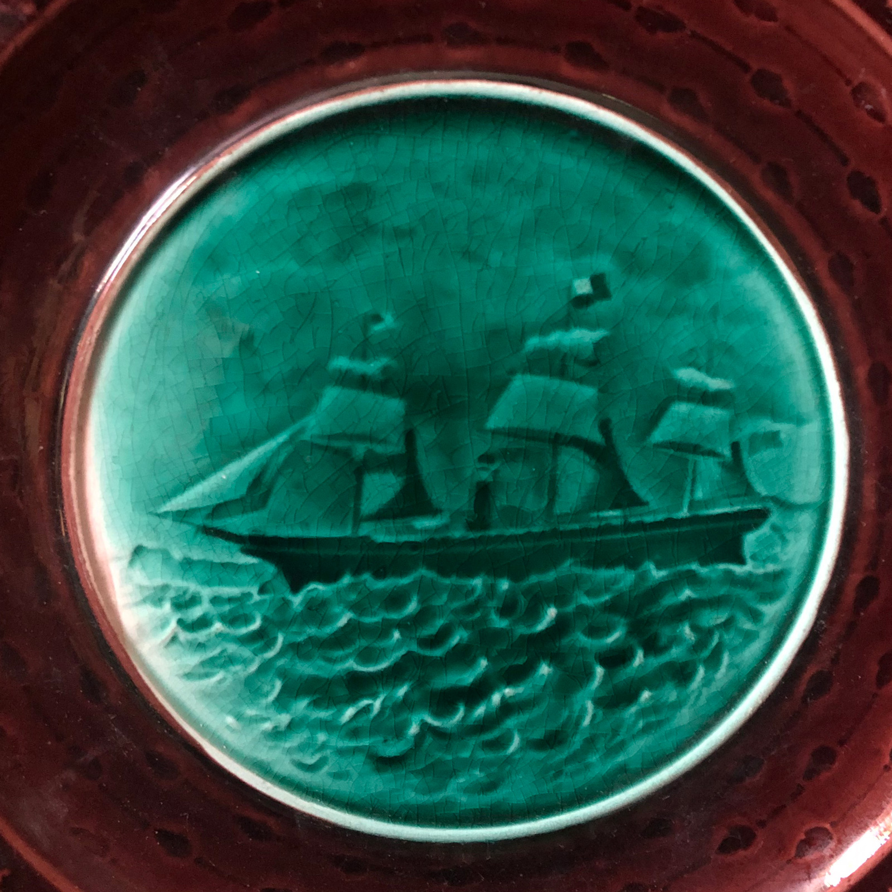
This picture has its own page with more detail, click here to see it.
"Émail ombrant" (French for “enamel shadow”) is a pottery-decorating technique developed in France in the 1840s (at the Rubelles factory by Baron A. du Tremblay). Designs were etched or stamped into the pottery and a transparent colored glaze applied thickly enough to re-level the surface. The varying depths produced colour highlighting.
Drip glazing and bare outsides: Deceptively difficult.
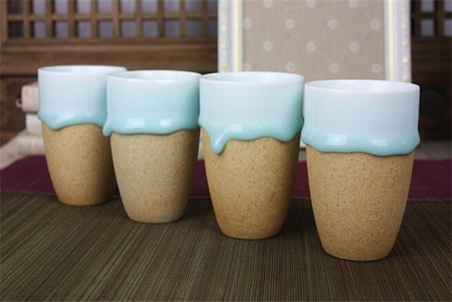
This picture has its own page with more detail, click here to see it.
What issues to these carry? Glaze fit. Do these yourself and they might end up being glaze compression demonstration pieces. These are available on Aliexpress (as Drip Pottery, Drippy Pottery or Goopy Glazes) and they are made by a manufacturer that has close control of body maturity (and thus strength) and the capability to tune the thermal expansion fit of glaze-on-body. Glaze fit has to be better than normal because of the absence of an outside glaze on much of the surface. Too low an expansion and the compression (outward pressure) will fracture body (especially for thin-walled pieces). Too high and it will craze. And if the glaze is thick, it will shiver or craze with far less forgiveness than a thin layer. And how did they get the glaze on this thick? They likely deflocculate it, up to 1.7 or more, glaze the inside, let it dry, then glaze the outside. And apply the glaze to preheated ware. If done right, these pieces are a visual and technical achievement. However, drippy glazes in the hands of hobbyists carry more risk. They often just multiple layers of commercial brushing glaze that only by accident fits the body being used. No wonder their pieces often end up as time-bombs or crazed bacteria farms.
Plate by Stephanie Osser - Color highlighting by thickness variation

This picture has its own page with more detail, click here to see it.
"Émail ombrant" (French for “enamel shadow”) is a pottery-decorating technique developed in France in the 1840s (at the Rubelles factory by Baron A. du Tremblay). Designs were etched or stamped into the pottery and a transparent colored glaze, in this case green, was applied thickly enough to re-level the surface. The varying depths produce colour highlighting. The design appears shadowy, hence the name. Stephanie calls these plates “Girls on the March”, they were inspired by parents who supported their girls with dynamic signage at the Boston of “Women on the March” rally in 2017.
In pigmented glossy transparent glazes
The pigment is the opacifier

This picture has its own page with more detail, click here to see it.
This is a cone 6 oxidation transparent glaze having enough flux (from a boron frit) to make it melt very well, that is why it is running and pooling. Iron oxide has been added (around 5%), producing this transparent amber effect. Darker coloration occurs where the glaze has run thicker (because it absorbs more light). This simple mechanism enables the glaze to automatically highlight contours, emboss and textures on the underlying surface. This mechanism works with any color in almost any transparent base glaze, as long as bubble clouding and crystallization do not occur. Entire lines of commercial glazes (e.g. AMACO Celadons) are based on this mechanism and potters prize it (industry doesn't like it because it is difficult to achieve consistency).
This glaze relies on high levels of K2O and Na2O to produce the brilliant gloss, however the side effect of that is crazing. These are sourced by feldspars, nepheline syenite and are high in certain frits. To achieve this effect, recipes must rely on other fluxes like boron, lithium or zinc.
Why does the glaze on the right crawl?
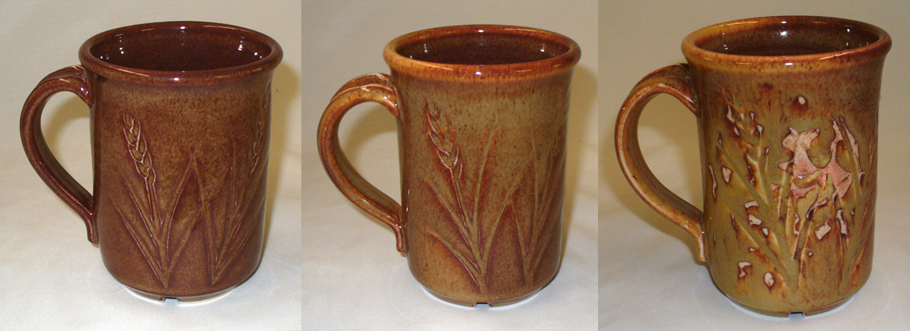
This picture has its own page with more detail, click here to see it.
This is G2415J Alberta Slip glaze on porcelain at cone 6. Why did the one on the right crawl? Left: thinnest application. Middle: thicker. Right thicker yet and crawling. All of these use a 50:50 calcine:raw mix of Alberta Slip in the recipe. While that appears fine for the two on the left, more calcine is needed to reduce shrinkage for the glaze on the right (perhaps 60:40 calcine:raw). This is a good demonstration of the need to adjust raw clay content for any glaze that tends to crack on drying. The Alberta Slip and Ravenscrag Slip page have information about how to calcine and calculate how much to use to tune the recipe to be perfect.
Here is what happens when a glaze has too much raw clay

This picture has its own page with more detail, click here to see it.
This is an example of how a glaze that contains too much plastic clay has been applied too thick. It shrinks and cracks during drying and is guaranteed to crawl. This is raw Alberta Slip. To solve this problem you need to tune a mix of raw and roasted clay. Enough raw clay is needed to suspend the slurry and dry it to a hard surface, but enough calcine is needed to keep the shrinkage low enough that this cracking does not happen. Perhaps you have been using a glaze having a high percentage of clay and this does not happen - the reason is likely that the clay is not highly plastic.
When a fluid-melt glaze is applied too thickly it runs
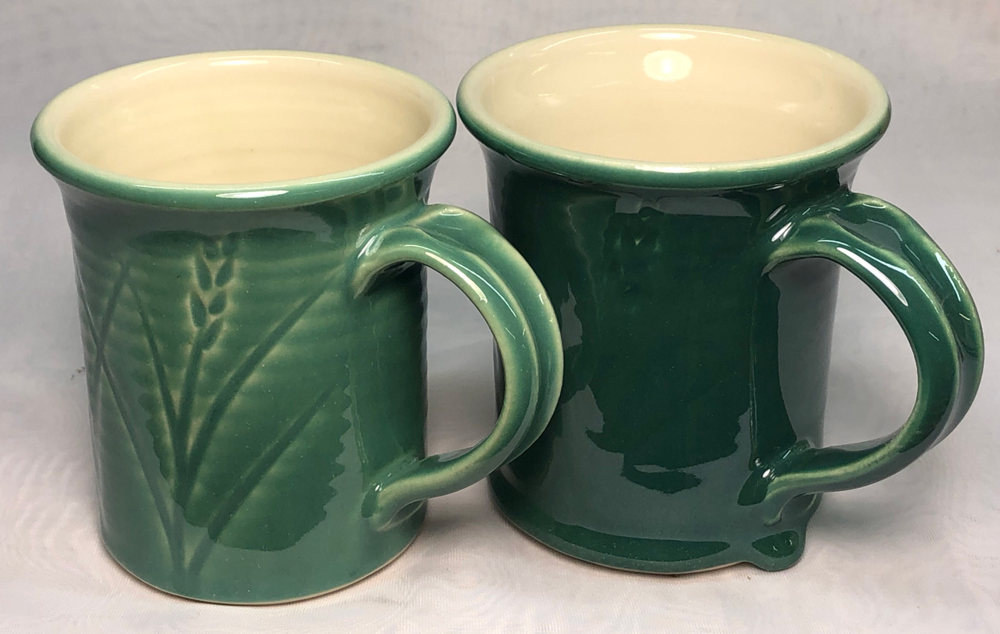
This picture has its own page with more detail, click here to see it.
This is G3806F fired to cone 6 on a porcelain. While you might like the visual effect, note that the thick drips at the bottom. If the thermal expansion is not perfectly matched to the body, the thick gobs will eventually break or fall off.
Crawling on a thickly applied glaze (cone 6)
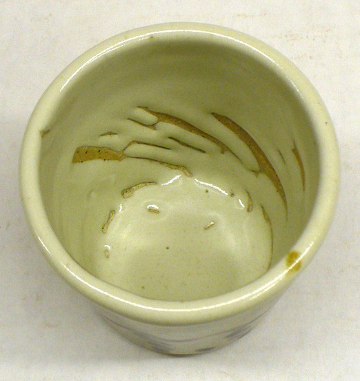
This picture has its own page with more detail, click here to see it.
Example of glaze crawling on the inside of a stoneware mug. Notice how thick it is. Thickly applied glazes have more ability to assert their shrinkage during drying and thus compromise their bond with the body below. The cracks that appear become bare patches after firing.
Yikes, the glaze on the right is going on way too thick and drying too fast
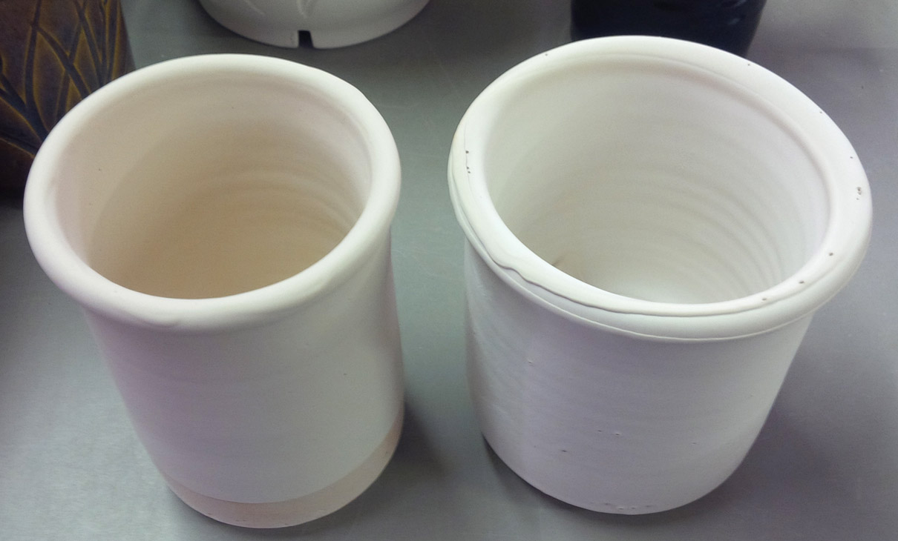
This picture has its own page with more detail, click here to see it.
Sometimes EP Kaolin is the best suspender in a glaze, sometimes it isn't. These are the same 85% fritted glaze. A (left) employs 15% Old Hickory #5 ball clay to suspend it, B (right) has 15% EPK. B settles quickly, demands low water content or it runs like water, it goes on very thick even if dipped quickly, it dries instantly and creates uneven thicknesses. By contrast, A goes on like silk, doesn't settle, dries evenly in about 10 seconds. What a difference! All simply because of using a different clay to suspend it.
Simple example of color-variation-by-thickness in a honey glaze
This picture has its own page with more detail, click here to see it.
This is GA6-B, a transparent amber glaze at cone 6. The color darkens in the recesses as a simple function of thickness.
Crawling can happen when paint-on glazes are layered over dipping glazes

This picture has its own page with more detail, click here to see it.
This bowl was dipped in a non-gummed clear dipping glaze. Such glazes are optimized for fast drying and even coverage. However their bond with the bisque is fragile. The blue over-glaze was applied thickly on the rim (so it would run downward during firing). But during drying, it shrunk and pulled the base coat away at the rim (likely forming many tiny cracks at the interface between the clear and the bisque. That initiated the cascade of crawling. When gummed dipping glazes are going to be painted over, a base-coat dipping glaze should be used. What is that? It is simply a regular fast-dry dipping glaze with some CMC gum added (perhaps half the amount as what would be used for painting). There is a cost to this: Longer drying times after dipping and less even coverage. And gum destroys the ability to gel the glaze and make the slurry thixotropic.
This boron blue effect depends on three things:
A dark body, variations in thickness, the right chemistry

This picture has its own page with more detail, click here to see it.
This is G2826A3, a transparent amber glaze at cone 6 on white (Plainsman M370), black (Plainsman 3B + 6% Mason 6666 black stain) and red (Plainsman M390) stoneware bodies. When the glaze is thinly applied, it is transparent. But at a tipping-point-thickness, it generates boron-blue that transforms it into a milky white. Glazes that are very glassy but on the edge of structural instability do this. So they are not good for functional ware.
This is an adjustment to the 50:30:20 Gerstley Borate base recipe (historically used for reactive glazes, often on functional surfaces! This cuts B2O3 and adds significant SiO2. But it still has double the boron of a typical functional glaze. While the chemistry of the original was within the territory of boron blue development (relatively low Al2O3), this one is better because of the increased SiO2 (the high MgO:CaO ratio is likely also helping). Boron blues like the lower Fe2O3 content or Gillespie Borate. One more factor: I am using 325 mesh silica here, it dissolves in the melt better.
Bad and good glaze application: The difference was the rheology.
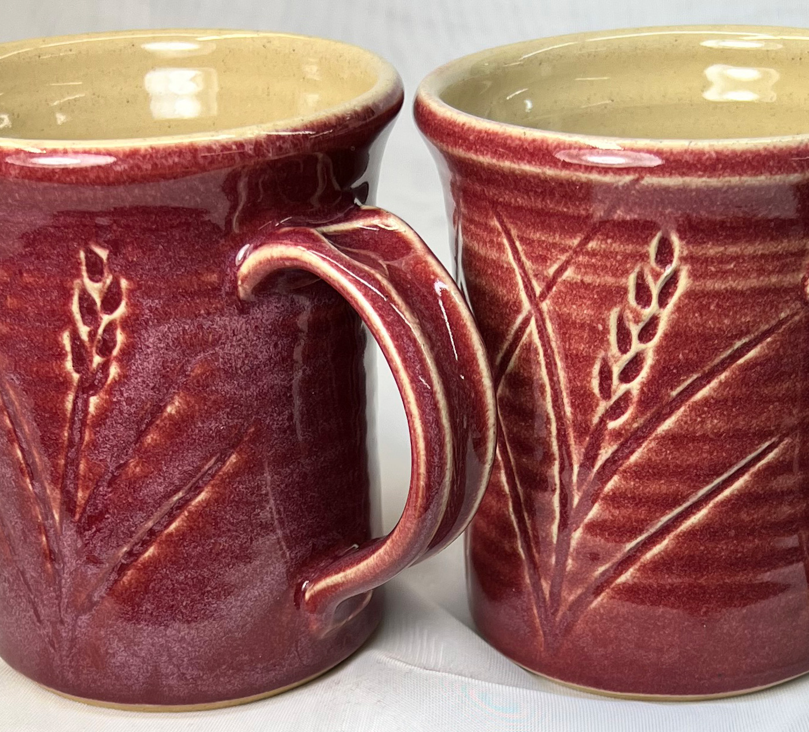
This picture has its own page with more detail, click here to see it.
This is GR6-L, is the standard GR6-A Ravenscrag Slip cone 6 base recipe + 10% chrome tin stain (the body is Midstone, the inside glaze is G2926B, the firing schedule is C6DHSC). Chrome tin stains are picky about their host glaze, if it does not have a compatible chemistry they fire grey. Obviously, there is a love affair going on here! But the mug on the left has an issue. The glaze on the left has gone on in varying thicknesses and these are producing crystallizations and runs and the incising is not being highlighted. The one on the right is under control. What is the difference? The rheology of the slurry for the bad mug was wrong - the specific gravity was too high (the water content was too low). Even on a quick dip it was building thickness unevenly and way too fast. And there were drips that were so big they had to be shaved off with a knife! After the addition of a lot of water, to take the specific gravity from 1.55 to 1.45 it was watery enough to accept some Epsom salts to make it thixotropic. The difference was amazing, it went on totally smooth without a single drip, producing the result on the right.
Thick application clouds this transparent glaze:
On terra-cotta bodies this is an issue

This picture has its own page with more detail, click here to see it.
Glaze clouding is a universal issue in ceramics. Terra cotta bodies often demonstrate this well. Pretty well all transparent glazes, even commercially available ones, can cloud, especially when applied thickly. This example is G2931K, it can be beautifully crystal clear when thin. But, as thickness increases, this happens. We ball-milled it to see if that would help, but as you can see, that has not impacted the problem. This is a dipping version, so that is part of the reason why it is easy to get it on too thick.
One of the advantages of brushing glazes is the ability to carefully control thickness. Many are formulated with a low specific gravity, requiring multiple layers for adequate thickness. Two coats rather than three are often better for this type of body.
Bubbles in Terra Cotta transparent glazes. What to do?
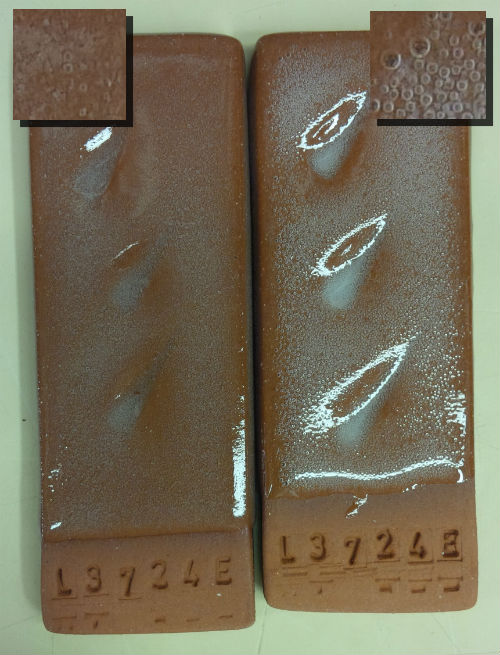
This picture has its own page with more detail, click here to see it.
Two transparent glazes applied thickly and fired to cone 03 on a terra cotta body. Right: A commercial bottled clear, I had to paint it on in layers, I ended up getting it on pretty thick. Left: G1916S, a mix of Ferro frits, nepheline syenite and kaolin - one dip for 2 seconds and it was glazed. And it went on more evenly. Bubbles are, of course, generated by and clay body during firing, but terra cottas are the worst. And when fired toward vitrification the gas volume can really increase. Complicating this is the fact that low temperature glazes melt early, while body gassing may still be happening. Improvements? Both of these could have been applied thinner. And I could have fired them using a drop-and-hold and a slow-cool schedule. But the biggest improvement would likely be firing lower, to cone 04.
Achieve more even glaze coverage on pieces of varying wall thickness
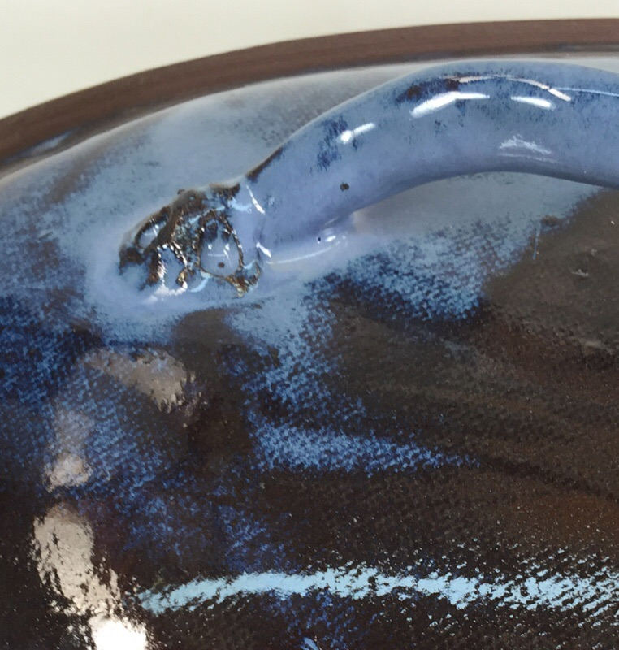
This picture has its own page with more detail, click here to see it.
This is an example of the importance of allowing a bisque piece to dry after glaze the inside surface before glazing the outside face. This hand-built caserole lid is thin and was glazed on the inside first. That wetted the bisque enough that when the outside was poured there was not enough absorbency remaining to build a sufficient thickness on the darker-colored areas of thinner cross section. The problem is exacerbated by the fact that the underlying red body is darkening the color of the thinner glazed sections.
Should I glaze the outside of this mug now? No!
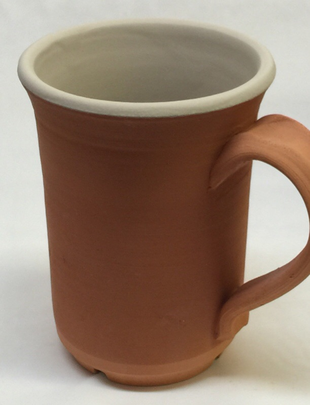
This picture has its own page with more detail, click here to see it.
This bisque mug has been glazed on the inside. But the bisque has absorbed water from that glaze, and this thin-walled mug is now waterlogged as a result (except at the thicker base). It does not have the absorbency needed to build up a thick enough layer of glaze on the outside. Even if it did, the water from the two glazes would wet the bisque so much that its drying time would be greatly extended. This is a problem because the mechanism of attachment of glaze to the body is fragile and works best when the glaze dries quickly. When drying is too very slow, bubbling and cracking often occur (leading to crawling in the firing).
Inbound Photo Links
|
A way to prevent a tenmoku glaze from running onto your kiln shelves |
 PayPal | No tracking, No ads, No paywall, No transient content! Just organized, concise information constantly updated and improved. Was this helpful? Consider supporting me. |
| By Tony Hansen Follow me on        |  |
Got a Question?
Buy me a coffee and we can talk 

https://digitalfire.com, All Rights Reserved
Privacy Policy